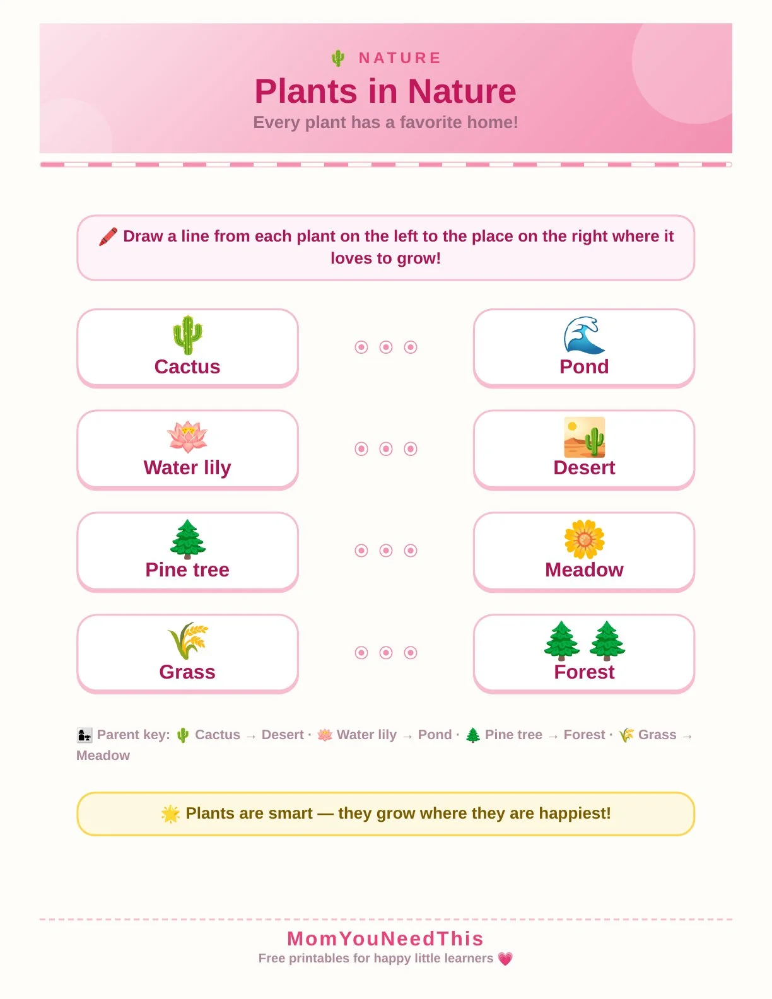

🌻🐝 Plants & Nature Where Plants Meet The Wild
Plants and animals are neighbors in nature. These activities explore how they share the world — flowers feeding bees, trees sheltering birds — in ways little kids can see and love.
Quick Answer
This free printable plants and nature activity shows toddlers and preschoolers (ages 2–5) how plants and animals help each other: bees carry pollen for flowers, birds nest in trees and spread their seeds, worms loosen the soil roots grow through. Kids explore plant-animal friendships in meadows and gardens and learn that nature is a web of neighbors helping neighbors. Download and print at home with no signup needed.
At a Glance
- Ages: Toddlers and preschoolers (ages 2–5)
- Activity: Discovering how plants and animals help each other
- Skills: Nature partnerships and observation
- Format: Printable worksheet (PDF)
- Cost: Free, no signup
Most nature teaching shows children one creature at a time. This page teaches the connections instead — who helps whom, and how — because that web is the real story of a meadow. A child who asks “who helps whom here?” about every picture is thinking like an ecologist, and it takes nothing but the question to start.
🌻🐝 Explore Plants & Nature
Discover plant-animal friendships, explore meadows and gardens, and learn how nature works together.
💡 How To Use This Activity
Print the pages, then watch one real plant-and-animal partnership if you can — a bee working a flower, a bird settled in a tree. Work through the sheets asking 'who helps whom here?' for every picture; that single question carries the whole activity. The print button opens the full-size page in a new tab if you prefer to print from there.

🖨️ Download Your Free Plants & Nature Printable
Discover plant-animal friendships, explore meadows and gardens, and learn how nature works together. Print it out, grab the crayons, and you're ready — no signup needed.
⬇️ Download Free Printable 🖨️ Print🎁 Free printable for toddlers & preschoolers
🐝 Who Helps Whom In Nature
Bees help flowers; flowers help bees. The flower feeds the bee nectar; the bee, dusted in pollen, delivers it to the next flower, which can then make seeds. Neither is being kind — both are being fed and reproduced — and the partnership is so important that about one bite in three of the food we eat exists because of pollinators.
Trees help birds; birds help trees. A tree gives a bird nesting branches, shelter and berries. The bird eats the berries and drops the seeds far away, already fertilized — planting new trees in places the parent tree could never reach. Jays burying acorns plant whole oak forests this way, forgetting most of their own caches.
Worms help soil; plants help worms. Worms tunnel air and water down to roots and turn dead leaves into rich soil. Fallen leaves from plants feed the worms. A garden with worms is a garden whose underground staff is at work.
Ladybugs help gardeners; gardeners help ladybugs. One ladybug eats thousands of the aphids that munch garden plants. In return, gardeners who skip sprays and leave leaf piles give ladybugs winter homes. Every partnership on this page has the same shape: two living things, each getting something it needs — the pattern your child can now hunt for anywhere outdoors.
❓ Plants & Nature FAQs
What activities are included in Plants & Nature?
This page collects our free plants and nature printables in one place: plant-animal friendships (bees and flowers, birds and trees, worms and soil), exploring meadows and gardens, and learning how nature works together. Download the printable below and start learning right away.
Are these activities really free?
Yes — every printable on MomYouNeedThis is 100% free to download and print. No signup, no payment, just tap the download button. The best companion to these pages is any patch of real green — a garden, a park, even a weedy fence line. The best companion to these pages is any patch of real green — a garden, a park, even a weedy fence line.
How do I use these activities with my child?
Print the pages, then watch one real plant-and-animal partnership if you can — a bee working a flower, a bird settled in a tree. Work through the sheets asking “who helps whom here?” for every picture; that single question carries the whole activity, and children start asking it unprompted within a day or two.